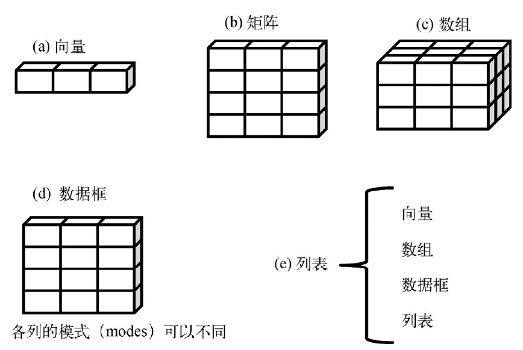
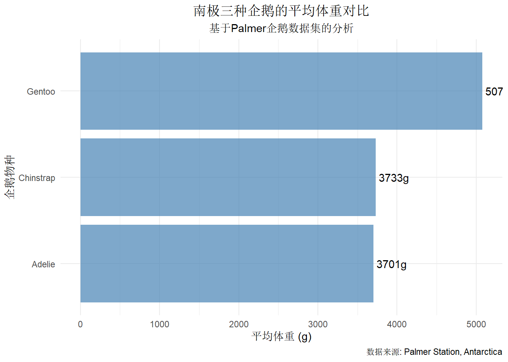

# 安装包（如果还没安装的话）
# install.packages(c("tidyverse", "palmerpenguins"))
# 加载包
library(tidyverse)
library(palmerpenguins)
# 设置3位小数
options(pillar.sigfig = 3)第2章：数据操作
R语言与数据可视化
1 课程概述
学习目标
- 掌握R语言基础数据结构的创建和操作
- 熟练使用dplyr包的核心函数进行排序、清理等数据预处理
- 能够读取csv格式文件并进行基本的数据清理
2 第一课时：R语言数据结构与tidyverse入门
2.1 环境准备
首先加载本课程需要的R包：
2.2 R语言数据结构快速入门
2.2.1 R语言中基本数据结构

2.2.2 创建向量（相当于Python的list）
# 数值向量
成绩 <- c(85, 92, 78, 88, 95)
print(成绩)[1] 85 92 78 88 95# 字符向量
姓名 <- c("王小明", "李小红", "张小华", "陈小东", "刘小芳")
print(姓名)[1] "王小明" "李小红" "张小华" "陈小东" "刘小芳"# 命名向量（相当于Python的字典）
学生成绩 <- c(王小明 = 85, 李小红 = 92, 张小华 = 78)
print(学生成绩)王小明 李小红 张小华
85 92 78 2.2.3 创建数据框（相当于pandas DataFrame）
# 传统方式
学生数据1 <- data.frame(
学号 = 1:5,
姓名 = c("王小明", "李小红", "张小华", "陈小东", "刘小芳"),
数学 = c(85, 92, 78, 88, 95),
英语 = c(80, 85, 90, 82, 88)
)
# 现代方式（推荐）- 使用tibble
学生数据2 <- tibble(
学号 = 1:5,
姓名 = c("王小明", "李小红", "张小华", "陈小东", "刘小芳"),
数学 = c(85, 92, 78, 88, 95),
英语 = c(80, 85, 90, 82, 88),
班级 = c("一班", "二班", "一班", "二班", "一班")
)
print(学生数据2)# A tibble: 5 × 5
学号 姓名 数学 英语 班级
<int> <chr> <dbl> <dbl> <chr>
1 1 王小明 85 80 一班
2 2 李小红 92 85 二班
3 3 张小华 78 90 一班
4 4 陈小东 88 82 二班
5 5 刘小芳 95 88 一班 2.3 查看数据的常用函数
# 查看数据结构（类似Python的df.info()）
glimpse(学生数据2)Rows: 5
Columns: 5
$ 学号 <int> 1, 2, 3, 4, 5
$ 姓名 <chr> "王小明", "李小红", "张小华", "陈小东", "刘小芳"
$ 数学 <dbl> 85, 92, 78, 88, 95
$ 英语 <dbl> 80, 85, 90, 82, 88
$ 班级 <chr> "一班", "二班", "一班", "二班", "一班"# 查看前几行（类似Python的df.head()）
head(学生数据2, 3)# A tibble: 3 × 5
学号 姓名 数学 英语 班级
<int> <chr> <dbl> <dbl> <chr>
1 1 王小明 85 80 一班
2 2 李小红 92 85 二班
3 3 张小华 78 90 一班 # 统计摘要（类似Python的df.describe()）
summary(学生数据2) 学号 姓名 数学 英语 班级
Min. :1 Length:5 Min. :78.0 Min. :80 Length:5
1st Qu.:2 Class :character 1st Qu.:85.0 1st Qu.:82 Class :character
Median :3 Mode :character Median :88.0 Median :85 Mode :character
Mean :3 Mean :87.6 Mean :85
3rd Qu.:4 3rd Qu.:92.0 3rd Qu.:88
Max. :5 Max. :95.0 Max. :90 2.4 管道操作符：让代码更易读
这是R语言最重要的特色之一！
# Python风格（嵌套函数，难读）
结果1 <- head(arrange(学生数据2, desc(数学)), 3)
# R管道风格（从左到右，易读）
结果2 <- 学生数据2 %>%
arrange(desc(数学)) %>%
head(3)
print(结果2)# A tibble: 3 × 5
学号 姓名 数学 英语 班级
<int> <chr> <dbl> <dbl> <chr>
1 5 刘小芳 95 88 一班
2 2 李小红 92 85 二班
3 4 陈小东 88 82 二班
管道操作符
%>% 的理解
- 把左边的结果传递给右边的函数
- 相当于Python中的方法链：
df.sort_values().head() - 让代码更符合人类思维：先做什么，再做什么
2.5 Palmer Penguins数据集介绍
数据集背景
Palmer Penguins是现代数据科学教学中广泛使用的数据集，它记录了南极附近三个岛屿上三种企鹅的生物测量数据。这个数据集由Dr. Kristen Gorman在Palmer Station收集，是著名的iris数据集的现代替代品。
研究背景： - 数据收集地点：南极洲Palmer群岛 - 收集时间：2007-2009年 - 研究目的：了解企鹅物种间的形态差异和栖息地选择
分析价值： - 包含真实的缺失值，适合学习数据清理 - 多维度变量：连续型、分类型变量俱全 - 生态学意义：体现物种适应性和生物多样性
让我们来探索这个数据集：
# 查看企鹅数据集
print(penguins)# A tibble: 344 × 8
species island bill_length_mm bill_depth_mm flipper_length_mm body_mass_g
<fct> <fct> <dbl> <dbl> <int> <int>
1 Adelie Torgersen 39.1 18.7 181 3750
2 Adelie Torgersen 39.5 17.4 186 3800
3 Adelie Torgersen 40.3 18 195 3250
4 Adelie Torgersen NA NA NA NA
5 Adelie Torgersen 36.7 19.3 193 3450
6 Adelie Torgersen 39.3 20.6 190 3650
7 Adelie Torgersen 38.9 17.8 181 3625
8 Adelie Torgersen 39.2 19.6 195 4675
9 Adelie Torgersen 34.1 18.1 193 3475
10 Adelie Torgersen 42 20.2 190 4250
# ℹ 334 more rows
# ℹ 2 more variables: sex <fct>, year <int># 数据集基本信息
glimpse(penguins)Rows: 344
Columns: 8
$ species <fct> Adelie, Adelie, Adelie, Adelie, Adelie, Adelie, Adel…
$ island <fct> Torgersen, Torgersen, Torgersen, Torgersen, Torgerse…
$ bill_length_mm <dbl> 39.1, 39.5, 40.3, NA, 36.7, 39.3, 38.9, 39.2, 34.1, …
$ bill_depth_mm <dbl> 18.7, 17.4, 18.0, NA, 19.3, 20.6, 17.8, 19.6, 18.1, …
$ flipper_length_mm <int> 181, 186, 195, NA, 193, 190, 181, 195, 193, 190, 186…
$ body_mass_g <int> 3750, 3800, 3250, NA, 3450, 3650, 3625, 4675, 3475, …
$ sex <fct> male, female, female, NA, female, male, female, male…
$ year <int> 2007, 2007, 2007, 2007, 2007, 2007, 2007, 2007, 2007…# 变量说明
cat("变量解释：
- species: 企鹅物种（阿德利Adelie、帽带Chinstrap、巴布亚Gentoo）
- island: 栖息岛屿（比斯科Biscoe、德里姆Dream、托格森Torgersen）
- bill_length_mm: 喙长（毫米）
- bill_depth_mm: 喙深（毫米）
- flipper_length_mm: 翼长（毫米）
- body_mass_g: 体重（克）
- sex: 性别
- year: 观测年份")变量解释：
- species: 企鹅物种（阿德利Adelie、帽带Chinstrap、巴布亚Gentoo）
- island: 栖息岛屿（比斯科Biscoe、德里姆Dream、托格森Torgersen）
- bill_length_mm: 喙长（毫米）
- bill_depth_mm: 喙深（毫米）
- flipper_length_mm: 翼长（毫米）
- body_mass_g: 体重（克）
- sex: 性别
- year: 观测年份2.6 实践练习1：数据探索
# 基础数据探索
penguins %>%
head(10)# A tibble: 10 × 8
species island bill_length_mm bill_depth_mm flipper_length_mm body_mass_g
<fct> <fct> <dbl> <dbl> <int> <int>
1 Adelie Torgersen 39.1 18.7 181 3750
2 Adelie Torgersen 39.5 17.4 186 3800
3 Adelie Torgersen 40.3 18 195 3250
4 Adelie Torgersen NA NA NA NA
5 Adelie Torgersen 36.7 19.3 193 3450
6 Adelie Torgersen 39.3 20.6 190 3650
7 Adelie Torgersen 38.9 17.8 181 3625
8 Adelie Torgersen 39.2 19.6 195 4675
9 Adelie Torgersen 34.1 18.1 193 3475
10 Adelie Torgersen 42 20.2 190 4250
# ℹ 2 more variables: sex <fct>, year <int># 查看有多少种企鹅
penguins %>%
count(species)# A tibble: 3 × 2
species n
<fct> <int>
1 Adelie 152
2 Chinstrap 68
3 Gentoo 124# 查看数据分布在哪些岛屿
penguins %>%
count(island)# A tibble: 3 × 2
island n
<fct> <int>
1 Biscoe 168
2 Dream 124
3 Torgersen 522.7 第一课时课后练习
练习题目
请使用学到的知识完成以下练习：
练习1.1：创建数据 创建一个包含你和同学信息的tibble，包含姓名、年龄、专业、家乡四个变量，至少5行数据。
练习1.2：数据探索 使用企鹅数据集，完成以下任务： 1. 查看数据集的维度（行数和列数） 2. 查看每种企鹅的数量分布 3. 使用summary()函数查看数值变量的统计摘要 4. 使用管道操作符查看体重最大的前5只企鹅
练习1.3：管道操作 将以下嵌套代码改写为管道操作：
head(arrange(filter(penguins, !is.na(body_mass_g)), desc(body_mass_g)), 10)
练习1参考答案
练习1.1答案：
同学信息 <- tibble(
姓名 = c("王小明", "李小红", "张小华", "陈小东", "刘小芳"),
年龄 = c(20, 21, 20, 22, 21),
专业 = c("数据科学", "数据科学", "大数据", "数据科学", "大数据"),
家乡 = c("北京", "上海", "广州", "深圳", "杭州")
)
print(同学信息)练习1.2答案：
# 1. 数据集维度
dim(penguins)[1] 344 8cat("企鹅数据集有", nrow(penguins), "行，", ncol(penguins), "列")企鹅数据集有 344 行， 8 列# 2. 企鹅数量分布
penguins %>%
count(species, name = "数量")# A tibble: 3 × 2
species 数量
<fct> <int>
1 Adelie 152
2 Chinstrap 68
3 Gentoo 124# 3. 数值变量统计摘要
penguins %>%
select(where(is.numeric)) %>%
summary() bill_length_mm bill_depth_mm flipper_length_mm body_mass_g
Min. :32.10 Min. :13.10 Min. :172.0 Min. :2700
1st Qu.:39.23 1st Qu.:15.60 1st Qu.:190.0 1st Qu.:3550
Median :44.45 Median :17.30 Median :197.0 Median :4050
Mean :43.92 Mean :17.15 Mean :200.9 Mean :4202
3rd Qu.:48.50 3rd Qu.:18.70 3rd Qu.:213.0 3rd Qu.:4750
Max. :59.60 Max. :21.50 Max. :231.0 Max. :6300
NA's :2 NA's :2 NA's :2 NA's :2
year
Min. :2007
1st Qu.:2007
Median :2008
Mean :2008
3rd Qu.:2009
Max. :2009
# 4. 体重最大的前5只企鹅
penguins %>%
filter(!is.na(body_mass_g)) %>%
arrange(desc(body_mass_g)) %>%
head(5)# A tibble: 5 × 8
species island bill_length_mm bill_depth_mm flipper_length_mm body_mass_g
<fct> <fct> <dbl> <dbl> <int> <int>
1 Gentoo Biscoe 49.2 15.2 221 6300
2 Gentoo Biscoe 59.6 17 230 6050
3 Gentoo Biscoe 51.1 16.3 220 6000
4 Gentoo Biscoe 48.8 16.2 222 6000
5 Gentoo Biscoe 45.2 16.4 223 5950
# ℹ 2 more variables: sex <fct>, year <int>练习1.3答案：
# 管道操作版本
penguins %>%
filter(!is.na(body_mass_g)) %>%
arrange(desc(body_mass_g)) %>%
head(10)# A tibble: 10 × 8
species island bill_length_mm bill_depth_mm flipper_length_mm body_mass_g
<fct> <fct> <dbl> <dbl> <int> <int>
1 Gentoo Biscoe 49.2 15.2 221 6300
2 Gentoo Biscoe 59.6 17 230 6050
3 Gentoo Biscoe 51.1 16.3 220 6000
4 Gentoo Biscoe 48.8 16.2 222 6000
5 Gentoo Biscoe 45.2 16.4 223 5950
6 Gentoo Biscoe 49.8 15.9 229 5950
7 Gentoo Biscoe 48.4 14.6 213 5850
8 Gentoo Biscoe 49.3 15.7 217 5850
9 Gentoo Biscoe 55.1 16 230 5850
10 Gentoo Biscoe 49.5 16.2 229 5800
# ℹ 2 more variables: sex <fct>, year <int>3 第二课时：dplyr数据操作核心技能
3.1 dplyr包简介
dplyr是数据操作的”瑞士军刀”，提供了6个核心函数：
| 函数 | 作用 | Python pandas对应 |
|---|---|---|
filter() |
筛选行 | df[df.column > value] |
select() |
选择列 | df[['col1', 'col2']] |
mutate() |
创建/修改列 | df['new_col'] = ... |
arrange() |
排序 | df.sort_values() |
group_by() |
分组 | df.groupby() |
summarise() |
汇总统计 | df.agg() |
3.2 filter()：筛选数据行
分析目的：我们想要研究不同条件下企鹅的特征，首先需要筛选出符合条件的观测数据。
# 筛选阿德利企鹅
penguins %>%
filter(species == "Adelie") %>%
head()# A tibble: 6 × 8
species island bill_length_mm bill_depth_mm flipper_length_mm body_mass_g
<fct> <fct> <dbl> <dbl> <int> <int>
1 Adelie Torgersen 39.1 18.7 181 3750
2 Adelie Torgersen 39.5 17.4 186 3800
3 Adelie Torgersen 40.3 18 195 3250
4 Adelie Torgersen NA NA NA NA
5 Adelie Torgersen 36.7 19.3 193 3450
6 Adelie Torgersen 39.3 20.6 190 3650
# ℹ 2 more variables: sex <fct>, year <int># 多条件筛选：体重大于4000g的阿德利企鹅
penguins %>%
filter(species == "Adelie" & body_mass_g > 4000) %>%
head()# A tibble: 6 × 8
species island bill_length_mm bill_depth_mm flipper_length_mm body_mass_g
<fct> <fct> <dbl> <dbl> <int> <int>
1 Adelie Torgersen 39.2 19.6 195 4675
2 Adelie Torgersen 42 20.2 190 4250
3 Adelie Torgersen 34.6 21.1 198 4400
4 Adelie Torgersen 42.5 20.7 197 4500
5 Adelie Torgersen 46 21.5 194 4200
6 Adelie Dream 39.2 21.1 196 4150
# ℹ 2 more variables: sex <fct>, year <int># 筛选多个物种
penguins %>%
filter(species %in% c("Adelie", "Chinstrap")) %>%
count(species)# A tibble: 2 × 2
species n
<fct> <int>
1 Adelie 152
2 Chinstrap 68# 排除缺失值
penguins %>%
filter(!is.na(body_mass_g)) %>%
nrow()[1] 342
常用筛选条件
==等于!=不等于
>,<,>=,<=大小比较%in%包含在列表中is.na()是否为缺失值!is.na()不是缺失值&逻辑与|逻辑或
3.3 select()：选择数据列
分析目的：从众多变量中选择我们关心的变量，简化数据结构，提高分析效率。
# 选择基本的物种和体型信息
penguins %>%
select(species, island, body_mass_g) %>%
head()# A tibble: 6 × 3
species island body_mass_g
<fct> <fct> <int>
1 Adelie Torgersen 3750
2 Adelie Torgersen 3800
3 Adelie Torgersen 3250
4 Adelie Torgersen NA
5 Adelie Torgersen 3450
6 Adelie Torgersen 3650# 选择一范围的列
penguins %>%
select(species:bill_depth_mm) %>%
head()# A tibble: 6 × 4
species island bill_length_mm bill_depth_mm
<fct> <fct> <dbl> <dbl>
1 Adelie Torgersen 39.1 18.7
2 Adelie Torgersen 39.5 17.4
3 Adelie Torgersen 40.3 18
4 Adelie Torgersen NA NA
5 Adelie Torgersen 36.7 19.3
6 Adelie Torgersen 39.3 20.6# 使用辅助函数选择所有喙部测量数据
penguins %>%
select(species, starts_with("bill")) %>%
head()# A tibble: 6 × 3
species bill_length_mm bill_depth_mm
<fct> <dbl> <dbl>
1 Adelie 39.1 18.7
2 Adelie 39.5 17.4
3 Adelie 40.3 18
4 Adelie NA NA
5 Adelie 36.7 19.3
6 Adelie 39.3 20.6# 排除不需要的列（如年份）
penguins %>%
select(-year, -sex) %>%
head()# A tibble: 6 × 6
species island bill_length_mm bill_depth_mm flipper_length_mm body_mass_g
<fct> <fct> <dbl> <dbl> <int> <int>
1 Adelie Torgersen 39.1 18.7 181 3750
2 Adelie Torgersen 39.5 17.4 186 3800
3 Adelie Torgersen 40.3 18 195 3250
4 Adelie Torgersen NA NA NA NA
5 Adelie Torgersen 36.7 19.3 193 3450
6 Adelie Torgersen 39.3 20.6 190 3650
select()辅助函数
starts_with("前缀")以某字符开头的列ends_with("后缀")以某字符结尾的列
contains("包含")包含某字符的列everything()所有列where(is.numeric)选择数值型列
3.4 mutate()：创建和修改列
分析目的：基于现有数据创建新的分析指标，如体重指数、体型分类等，为深入分析做准备。
# 创建新的分析指标
penguins %>%
mutate(
# 体重转换为千克，便于理解
体重_kg = round(body_mass_g / 1000, 2),
# 计算体型指数（体重/翼长比例）
体型指数 = round(body_mass_g / flipper_length_mm, 2),
# 创建体型分类
体型 = if_else(body_mass_g > 4500, "大型", "中小型")
) %>%
select(species, body_mass_g, 体重_kg, 体型指数, 体型) %>%
head()# A tibble: 6 × 5
species body_mass_g 体重_kg 体型指数 体型
<fct> <int> <dbl> <dbl> <chr>
1 Adelie 3750 3.75 20.7 中小型
2 Adelie 3800 3.8 20.4 中小型
3 Adelie 3250 3.25 16.7 中小型
4 Adelie NA NA NA <NA>
5 Adelie 3450 3.45 17.9 中小型
6 Adelie 3650 3.65 19.2 中小型# 复杂条件分类：为生态学研究创建精细分类
penguins %>%
mutate(
体重等级 = case_when(
body_mass_g > 5500 ~ "超大型",
body_mass_g > 4500 ~ "大型",
body_mass_g > 4000 ~ "中型",
body_mass_g > 3500 ~ "小型",
TRUE ~ "超小型" # 默认情况
)
) %>%
count(species, 体重等级) %>%
arrange(species, desc(体重等级))# A tibble: 13 × 3
species 体重等级 n
<fct> <chr> <int>
1 Adelie 超小型 60
2 Adelie 小型 57
3 Adelie 大型 7
4 Adelie 中型 28
5 Chinstrap 超小型 19
6 Chinstrap 小型 34
7 Chinstrap 大型 2
8 Chinstrap 中型 13
9 Gentoo 超小型 1
10 Gentoo 超大型 28
11 Gentoo 小型 1
12 Gentoo 大型 78
13 Gentoo 中型 163.5 arrange()：数据排序
分析目的：通过排序找出极值情况，识别数据中的异常值或关键观测。
# 找出最重的企鹅
penguins %>%
arrange(desc(body_mass_g)) %>%
select(species, island, body_mass_g) %>%
head()# A tibble: 6 × 3
species island body_mass_g
<fct> <fct> <int>
1 Gentoo Biscoe 6300
2 Gentoo Biscoe 6050
3 Gentoo Biscoe 6000
4 Gentoo Biscoe 6000
5 Gentoo Biscoe 5950
6 Gentoo Biscoe 5950# 找出最轻的企鹅
penguins %>%
arrange(body_mass_g) %>%
select(species, island, body_mass_g) %>%
head()# A tibble: 6 × 3
species island body_mass_g
<fct> <fct> <int>
1 Chinstrap Dream 2700
2 Adelie Biscoe 2850
3 Adelie Biscoe 2850
4 Adelie Biscoe 2900
5 Adelie Dream 2900
6 Adelie Torgersen 2900# 多层排序：先按物种，再按体重降序
# 这样可以看到每个物种内部的体重分布
penguins %>%
arrange(species, desc(body_mass_g)) %>%
select(species, body_mass_g) %>%
head(15)# A tibble: 15 × 2
species body_mass_g
<fct> <int>
1 Adelie 4775
2 Adelie 4725
3 Adelie 4700
4 Adelie 4675
5 Adelie 4650
6 Adelie 4600
7 Adelie 4600
8 Adelie 4500
9 Adelie 4475
10 Adelie 4450
11 Adelie 4450
12 Adelie 4400
13 Adelie 4400
14 Adelie 4400
15 Adelie 43503.6 group_by() + summarise()：分组统计
分析目的：这是生态学研究的核心！通过分组统计比较不同物种、不同性别企鹅的特征差异。
# 总体统计：了解数据集整体情况
penguins %>%
summarise(
企鹅总数 = n(),
平均体重 = round(mean(body_mass_g, na.rm = TRUE), 1),
体重标准差 = round(sd(body_mass_g, na.rm = TRUE), 1),
最大体重 = max(body_mass_g, na.rm = TRUE),
最小体重 = min(body_mass_g, na.rm = TRUE)
)# A tibble: 1 × 5
企鹅总数 平均体重 体重标准差 最大体重 最小体重
<int> <dbl> <dbl> <int> <int>
1 344 4202. 802 6300 2700# 按物种分组：比较不同物种的体型差异
物种统计 <- penguins %>%
group_by(species) %>%
summarise(
数量 = n(),
平均体重 = round(mean(body_mass_g, na.rm = TRUE), 1),
平均翼长 = round(mean(flipper_length_mm, na.rm = TRUE), 1),
平均喙长 = round(mean(bill_length_mm, na.rm = TRUE), 1),
.groups = "drop"
) %>%
arrange(desc(平均体重))
print(物种统计)# A tibble: 3 × 5
species 数量 平均体重 平均翼长 平均喙长
<fct> <int> <dbl> <dbl> <dbl>
1 Gentoo 124 5076 217. 47.5
2 Chinstrap 68 3733. 196. 48.8
3 Adelie 152 3701. 190 38.8# 多维度分组：研究性别和物种的交互作用
性别物种统计 <- penguins %>%
filter(!is.na(sex)) %>%
group_by(species, sex) %>%
summarise(
数量 = n(),
平均体重 = round(mean(body_mass_g, na.rm = TRUE), 1),
体重差异 = round(max(body_mass_g, na.rm = TRUE) - min(body_mass_g, na.rm = TRUE), 1),
.groups = "drop"
) %>%
arrange(species, sex)
print(性别物种统计)# A tibble: 6 × 5
species sex 数量 平均体重 体重差异
<fct> <fct> <int> <dbl> <dbl>
1 Adelie female 73 3369. 1050
2 Adelie male 73 4044. 1450
3 Chinstrap female 34 3527. 1450
4 Chinstrap male 34 3939 1550
5 Gentoo female 58 4680. 1250
6 Gentoo male 61 5485. 15503.7 综合实战：完整的生态学数据分析
研究问题：不同岛屿上的企鹅是否表现出适应性差异？我们来分析岛屿环境对企鹅体型的影响。
# 完整的生态学分析流程
岛屿适应性分析 <- penguins %>%
# 步骤1：数据清理（移除缺失数据）
filter(!is.na(sex), !is.na(body_mass_g), !is.na(bill_length_mm)) %>%
# 步骤2：创建生态学指标
mutate(
体重_kg = round(body_mass_g / 1000, 2),
# 体质指数：体重与体长的比例，反映企鹅的"健壮程度"
体质指数 = round(body_mass_g / bill_length_mm, 2),
# 喙形指数：喙长深比，反映觅食适应性
喙形指数 = round(bill_length_mm / bill_depth_mm, 2),
# 体型等级分类
体型等级 = case_when(
body_mass_g >= quantile(body_mass_g, 0.75) ~ "大型",
body_mass_g >= quantile(body_mass_g, 0.25) ~ "中型",
TRUE ~ "小型"
)
) %>%
# 步骤3：多维度分组分析
group_by(island, species, sex) %>%
summarise(
企鹅数量 = n(),
平均体重 = round(mean(体重_kg), 2),
平均体质指数 = round(mean(体质指数), 2),
平均喙形指数 = round(mean(喙形指数), 2),
体重变异系数 = round(sd(体重_kg) / mean(体重_kg) * 100, 1),
.groups = "drop"
) %>%
# 步骤4：筛选有意义的组别（样本量≥5）
filter(企鹅数量 >= 5) %>%
# 步骤5：按生态学意义排序
arrange(island, species, desc(平均体重))
print(岛屿适应性分析)# A tibble: 10 × 8
island species sex 企鹅数量 平均体重 平均体质指数 平均喙形指数 体重变异系数
<fct> <fct> <fct> <int> <dbl> <dbl> <dbl> <dbl>
1 Biscoe Adelie male 22 4.05 99.8 2.14 8.8
2 Biscoe Adelie fema… 22 3.37 90.3 2.12 10.2
3 Biscoe Gentoo male 61 5.48 111. 3.15 5.7
4 Biscoe Gentoo fema… 58 4.68 103. 3.2 6
5 Dream Adelie male 28 4.05 101. 2.13 8.2
6 Dream Adelie fema… 27 3.34 90.8 2.1 6.3
7 Dream Chinst… male 34 3.94 77.1 2.66 9.2
8 Dream Chinst… fema… 34 3.53 75.9 2.65 8.1
9 Torge… Adelie male 23 4.04 99.9 2.1 9.2
10 Torge… Adelie fema… 24 3.4 90.7 2.14 7.6# 生态学解释
cat("\n=== 生态学发现 ===\n")
=== 生态学发现 ===cat("从分析结果可以看出：\n")从分析结果可以看出：cat("1. 不同岛屿上同种企鹅可能存在体型差异\n") 1. 不同岛屿上同种企鹅可能存在体型差异cat("2. 性别二态性在不同物种中表现不同\n")2. 性别二态性在不同物种中表现不同cat("3. 体重变异系数反映了种群的稳定性\n")3. 体重变异系数反映了种群的稳定性3.8 为数据可视化准备数据
目标：整理数据为下一章的可视化做准备，创建清晰的对比数据。
# 准备物种对比的可视化数据
可视化数据1 <- penguins %>%
filter(!is.na(body_mass_g), !is.na(flipper_length_mm)) %>%
group_by(species) %>%
summarise(
数量 = n(),
平均体重 = round(mean(body_mass_g), 0),
平均翼长 = round(mean(flipper_length_mm), 0),
体重标准差 = round(sd(body_mass_g), 0),
翼长标准差 = round(sd(flipper_length_mm), 0)
)
print(可视化数据1)# A tibble: 3 × 6
species 数量 平均体重 平均翼长 体重标准差 翼长标准差
<fct> <int> <dbl> <dbl> <dbl> <dbl>
1 Adelie 151 3701 190 459 7
2 Chinstrap 68 3733 196 384 7
3 Gentoo 123 5076 217 504 6# 准备性别差异的可视化数据
可视化数据2 <- penguins %>%
filter(!is.na(sex), !is.na(body_mass_g)) %>%
group_by(species, sex) %>%
summarise(
平均体重 = round(mean(body_mass_g), 0),
数量 = n(),
.groups = "drop"
) %>%
# 转换为宽格式，便于对比
pivot_wider(names_from = sex, values_from = c(平均体重, 数量))
print(可视化数据2)# A tibble: 3 × 5
species 平均体重_female 平均体重_male 数量_female 数量_male
<fct> <dbl> <dbl> <int> <int>
1 Adelie 3369 4043 73 73
2 Chinstrap 3527 3939 34 34
3 Gentoo 4680 5485 58 61# 快速预览：创建一个简单的对比图
可视化数据1 %>%
ggplot(aes(x = reorder(species, 平均体重), y = 平均体重)) +
geom_col(fill = "steelblue", alpha = 0.7) +
geom_text(aes(label = paste0(平均体重, "g")),
hjust = -0.1) +
coord_flip() +
labs(
title = "南极三种企鹅的平均体重对比",
subtitle = "基于Palmer企鹅数据集的分析",
x = "企鹅物种",
y = "平均体重 (g)",
caption = "数据来源: Palmer Station, Antarctica"
) +
theme_minimal() +
theme(plot.title = element_text(hjust = 0.5),
plot.subtitle = element_text(hjust = 0.5))
4 课堂练习
4.1 练习2.1：基础操作
任务背景：作为生态学研究者，你需要分析Dream岛上的企鹅特征。
# 1. 筛选出生活在Dream岛的企鹅，查看有多少只
penguins %>%
filter(________) %>%
nrow()
# 2. 选择物种、岛屿和所有身体测量数据
penguins %>%
select(________)
# 3. 创建一个新列：喙长宽比（bill_length_mm / bill_depth_mm）
# 这个比例在鸟类学中称为"喙形指数"，反映觅食适应性
penguins %>%
mutate(________)
# 4. 按翼长降序排列，找出翼最长的10只企鹅
penguins %>%
arrange(________) %>%
head(10)4.2 练习2.2：分组统计
任务背景：研究每个岛屿的企鹅群落结构。
# 计算每个岛屿上各物种企鹅的数量和平均体重
# 这有助于理解岛屿的承载能力和物种分布
penguins %>%
group_by(________, ________) %>%
summarise(________)4.3 练习答案
点击查看练习答案
# 练习2.1答案
# 1. Dream岛企鹅数量
dream_count <- penguins %>%
filter(island == "Dream") %>%
nrow()
cat("Dream岛共有", dream_count, "只企鹅")Dream岛共有 124 只企鹅# 2. 选择相关列
penguins %>%
select(species, island, bill_length_mm:body_mass_g) %>%
head()# A tibble: 6 × 6
species island bill_length_mm bill_depth_mm flipper_length_mm body_mass_g
<fct> <fct> <dbl> <dbl> <int> <int>
1 Adelie Torgersen 39.1 18.7 181 3750
2 Adelie Torgersen 39.5 17.4 186 3800
3 Adelie Torgersen 40.3 18 195 3250
4 Adelie Torgersen NA NA NA NA
5 Adelie Torgersen 36.7 19.3 193 3450
6 Adelie Torgersen 39.3 20.6 190 3650# 3. 创建喙形指数
penguins %>%
mutate(喙形指数 = round(bill_length_mm / bill_depth_mm, 2)) %>%
select(species, bill_length_mm, bill_depth_mm, 喙形指数) %>%
head()# A tibble: 6 × 4
species bill_length_mm bill_depth_mm 喙形指数
<fct> <dbl> <dbl> <dbl>
1 Adelie 39.1 18.7 2.09
2 Adelie 39.5 17.4 2.27
3 Adelie 40.3 18 2.24
4 Adelie NA NA NA
5 Adelie 36.7 19.3 1.9
6 Adelie 39.3 20.6 1.91# 4. 翼长排序
penguins %>%
arrange(desc(flipper_length_mm)) %>%
select(species, island, flipper_length_mm) %>%
head(10)# A tibble: 10 × 3
species island flipper_length_mm
<fct> <fct> <int>
1 Gentoo Biscoe 231
2 Gentoo Biscoe 230
3 Gentoo Biscoe 230
4 Gentoo Biscoe 230
5 Gentoo Biscoe 230
6 Gentoo Biscoe 230
7 Gentoo Biscoe 230
8 Gentoo Biscoe 230
9 Gentoo Biscoe 229
10 Gentoo Biscoe 229# 练习2.2答案
岛屿群落结构 <- penguins %>%
filter(!is.na(body_mass_g)) %>%
group_by(island, species) %>%
summarise(
企鹅数量 = n(),
平均体重 = round(mean(body_mass_g), 1),
体重范围 = paste0(min(body_mass_g), "-", max(body_mass_g), "g"),
.groups = "drop"
) %>%
arrange(island, desc(企鹅数量))
print(岛屿群落结构)# A tibble: 5 × 5
island species 企鹅数量 平均体重 体重范围
<fct> <fct> <int> <dbl> <chr>
1 Biscoe Gentoo 123 5076 3950-6300g
2 Biscoe Adelie 44 3710. 2850-4775g
3 Dream Chinstrap 68 3733. 2700-4800g
4 Dream Adelie 56 3688. 2900-4650g
5 Torgersen Adelie 51 3706. 2900-4700g5 拓展练习：mtcars数据集分析
5.1 数据集介绍
mtcars数据集背景
mtcars是R语言的经典内置数据集，包含1974年《Motor Trend》杂志中32款汽车的性能数据。这个数据集在汽车工程和统计学教学中广泛使用。
数据来源：1974年Motor Trend US杂志 样本量：32款汽车 变量数量：11个性能指标
研究价值： - 经典的回归分析案例数据 - 包含连续型和分类型变量 - 适合学习相关性分析和分组比较
# 查看mtcars数据集
data(mtcars)
glimpse(mtcars)Rows: 32
Columns: 11
$ mpg <dbl> 21.0, 21.0, 22.8, 21.4, 18.7, 18.1, 14.3, 24.4, 22.8, 19.2, 17.8,…
$ cyl <dbl> 6, 6, 4, 6, 8, 6, 8, 4, 4, 6, 6, 8, 8, 8, 8, 8, 8, 4, 4, 4, 4, 8,…
$ disp <dbl> 160.0, 160.0, 108.0, 258.0, 360.0, 225.0, 360.0, 146.7, 140.8, 16…
$ hp <dbl> 110, 110, 93, 110, 175, 105, 245, 62, 95, 123, 123, 180, 180, 180…
$ drat <dbl> 3.90, 3.90, 3.85, 3.08, 3.15, 2.76, 3.21, 3.69, 3.92, 3.92, 3.92,…
$ wt <dbl> 2.620, 2.875, 2.320, 3.215, 3.440, 3.460, 3.570, 3.190, 3.150, 3.…
$ qsec <dbl> 16.46, 17.02, 18.61, 19.44, 17.02, 20.22, 15.84, 20.00, 22.90, 18…
$ vs <dbl> 0, 0, 1, 1, 0, 1, 0, 1, 1, 1, 1, 0, 0, 0, 0, 0, 0, 1, 1, 1, 1, 0,…
$ am <dbl> 1, 1, 1, 0, 0, 0, 0, 0, 0, 0, 0, 0, 0, 0, 0, 0, 0, 1, 1, 1, 0, 0,…
$ gear <dbl> 4, 4, 4, 3, 3, 3, 3, 4, 4, 4, 4, 3, 3, 3, 3, 3, 3, 4, 4, 4, 3, 3,…
$ carb <dbl> 4, 4, 1, 1, 2, 1, 4, 2, 2, 4, 4, 3, 3, 3, 4, 4, 4, 1, 2, 1, 1, 2,…# 变量说明
cat("主要变量解释：
- mpg: 燃油效率（英里/加仑）
- cyl: 气缸数
- hp: 马力
- wt: 重量（1000磅）
- gear: 前进档数
- am: 传动类型（0=自动，1=手动）")主要变量解释：
- mpg: 燃油效率（英里/加仑）
- cyl: 气缸数
- hp: 马力
- wt: 重量（1000磅）
- gear: 前进档数
- am: 传动类型（0=自动，1=手动）# 添加汽车名称作为一列
汽车数据 <- mtcars %>%
rownames_to_column("车型")
head(汽车数据) 车型 mpg cyl disp hp drat wt qsec vs am gear carb
1 Mazda RX4 21.0 6 160 110 3.90 2.620 16.46 0 1 4 4
2 Mazda RX4 Wag 21.0 6 160 110 3.90 2.875 17.02 0 1 4 4
3 Datsun 710 22.8 4 108 93 3.85 2.320 18.61 1 1 4 1
4 Hornet 4 Drive 21.4 6 258 110 3.08 3.215 19.44 1 0 3 1
5 Hornet Sportabout 18.7 8 360 175 3.15 3.440 17.02 0 0 3 2
6 Valiant 18.1 6 225 105 2.76 3.460 20.22 1 0 3 15.2 拓展练习题目
课后作业：汽车性能数据分析
请使用mtcars数据集完成以下分析任务，这将帮助你巩固本章所学的所有技能。
任务1：数据探索（20分） 1. 查看数据集的基本信息（维度、结构、统计摘要） 2. 找出燃油效率最高和最低的5款汽车 3. 统计不同气缸数汽车的数量分布
任务2：数据变换（30分） 1. 创建燃油效率等级：高效（mpg≥25）、中等（15≤mpg<25）、低效（mpg<15） 2. 计算功率重量比（hp/wt），这是衡量汽车性能的重要指标 3. 将传动类型转换为中文：0=“自动档”，1=“手动档”
任务3：分组分析（30分） 1. 按气缸数分组，计算各组的平均燃油效率、平均马力、汽车数量 2. 按传动类型分组，比较自动档和手动档汽车的性能差异 3. 分析4缸、6缸、8缸汽车在燃油效率上的差异
任务4：综合应用（20分） 1. 找出每个气缸数组别中燃油效率最高的汽车 2. 创建一个汇总表，显示不同档位数（gear）汽车的性能特征 3. 为数据可视化准备一个整洁的数据框
5.3 拓展练习参考答案
点击查看参考答案
# 任务1：数据探索
cat("=== 任务1：数据探索 ===\n")=== 任务1：数据探索 ===# 1. 基本信息
cat("数据集维度：", dim(mtcars), "\n")数据集维度： 32 11 glimpse(mtcars)Rows: 32
Columns: 11
$ mpg <dbl> 21.0, 21.0, 22.8, 21.4, 18.7, 18.1, 14.3, 24.4, 22.8, 19.2, 17.8,…
$ cyl <dbl> 6, 6, 4, 6, 8, 6, 8, 4, 4, 6, 6, 8, 8, 8, 8, 8, 8, 4, 4, 4, 4, 8,…
$ disp <dbl> 160.0, 160.0, 108.0, 258.0, 360.0, 225.0, 360.0, 146.7, 140.8, 16…
$ hp <dbl> 110, 110, 93, 110, 175, 105, 245, 62, 95, 123, 123, 180, 180, 180…
$ drat <dbl> 3.90, 3.90, 3.85, 3.08, 3.15, 2.76, 3.21, 3.69, 3.92, 3.92, 3.92,…
$ wt <dbl> 2.620, 2.875, 2.320, 3.215, 3.440, 3.460, 3.570, 3.190, 3.150, 3.…
$ qsec <dbl> 16.46, 17.02, 18.61, 19.44, 17.02, 20.22, 15.84, 20.00, 22.90, 18…
$ vs <dbl> 0, 0, 1, 1, 0, 1, 0, 1, 1, 1, 1, 0, 0, 0, 0, 0, 0, 1, 1, 1, 1, 0,…
$ am <dbl> 1, 1, 1, 0, 0, 0, 0, 0, 0, 0, 0, 0, 0, 0, 0, 0, 0, 1, 1, 1, 0, 0,…
$ gear <dbl> 4, 4, 4, 3, 3, 3, 3, 4, 4, 4, 4, 3, 3, 3, 3, 3, 3, 4, 4, 4, 3, 3,…
$ carb <dbl> 4, 4, 1, 1, 2, 1, 4, 2, 2, 4, 4, 3, 3, 3, 4, 4, 4, 1, 2, 1, 1, 2,…# 2. 燃油效率极值
高效汽车 <- mtcars %>%
rownames_to_column("车型") %>%
arrange(desc(mpg)) %>%
head(5) %>%
select(车型, mpg)
低效汽车 <- mtcars %>%
rownames_to_column("车型") %>%
arrange(mpg) %>%
head(5) %>%
select(车型, mpg)
cat("\n最高效的5款汽车：\n")
最高效的5款汽车：print(高效汽车) 车型 mpg
1 Toyota Corolla 33.9
2 Fiat 128 32.4
3 Honda Civic 30.4
4 Lotus Europa 30.4
5 Fiat X1-9 27.3cat("\n最低效的5款汽车：\n")
最低效的5款汽车：print(低效汽车) 车型 mpg
1 Cadillac Fleetwood 10.4
2 Lincoln Continental 10.4
3 Camaro Z28 13.3
4 Duster 360 14.3
5 Chrysler Imperial 14.7# 3. 气缸数分布
气缸分布 <- mtcars %>%
count(cyl, name = "汽车数量") %>%
mutate(百分比 = round(汽车数量/sum(汽车数量)*100, 1))
cat("\n气缸数分布：\n")
气缸数分布：print(气缸分布) cyl 汽车数量 百分比
1 4 11 34.4
2 6 7 21.9
3 8 14 43.8# 任务2：数据变换
cat("\n=== 任务2：数据变换 ===\n")
=== 任务2：数据变换 ===汽车分析数据 <- mtcars %>%
rownames_to_column("车型") %>%
mutate(
# 燃油效率等级
燃油等级 = case_when(
mpg >= 25 ~ "高效",
mpg >= 15 ~ "中等",
TRUE ~ "低效"
),
# 功率重量比
功率重量比 = round(hp / wt, 2),
# 传动类型中文
传动类型 = if_else(am == 0, "自动档", "手动档")
)
汽车分析数据 %>%
select(车型, mpg, 燃油等级, 功率重量比, 传动类型) %>%
head(10) 车型 mpg 燃油等级 功率重量比 传动类型
1 Mazda RX4 21.0 中等 41.98 手动档
2 Mazda RX4 Wag 21.0 中等 38.26 手动档
3 Datsun 710 22.8 中等 40.09 手动档
4 Hornet 4 Drive 21.4 中等 34.21 自动档
5 Hornet Sportabout 18.7 中等 50.87 自动档
6 Valiant 18.1 中等 30.35 自动档
7 Duster 360 14.3 低效 68.63 自动档
8 Merc 240D 24.4 中等 19.44 自动档
9 Merc 230 22.8 中等 30.16 自动档
10 Merc 280 19.2 中等 35.76 自动档# 任务3：分组分析
cat("\n=== 任务3：分组分析 ===\n")
=== 任务3：分组分析 ===# 1. 按气缸数分组
气缸性能 <- 汽车分析数据 %>%
group_by(cyl) %>%
summarise(
汽车数量 = n(),
平均燃油效率 = round(mean(mpg), 2),
平均马力 = round(mean(hp), 1),
马力范围 = paste0(min(hp), "-", max(hp)),
.groups = "drop"
)
cat("按气缸数分组分析：\n")按气缸数分组分析：print(气缸性能)# A tibble: 3 × 5
cyl 汽车数量 平均燃油效率 平均马力 马力范围
<dbl> <int> <dbl> <dbl> <chr>
1 4 11 26.7 82.6 52-113
2 6 7 19.7 122. 105-175
3 8 14 15.1 209. 150-335 # 2. 按传动类型分组
传动性能 <- 汽车分析数据 %>%
group_by(传动类型) %>%
summarise(
汽车数量 = n(),
平均燃油效率 = round(mean(mpg), 2),
平均马力 = round(mean(hp), 1),
平均重量 = round(mean(wt), 2),
平均功率重量比 = round(mean(功率重量比), 2),
.groups = "drop"
)
cat("\n按传动类型分组分析：\n")
按传动类型分组分析：print(传动性能)# A tibble: 2 × 6
传动类型 汽车数量 平均燃油效率 平均马力 平均重量 平均功率重量比
<chr> <int> <dbl> <dbl> <dbl> <dbl>
1 手动档 13 24.4 127. 2.41 49.9
2 自动档 19 17.2 160. 3.77 42.2# 3. 燃油效率差异分析
燃油差异 <- 汽车分析数据 %>%
group_by(cyl) %>%
summarise(
燃油效率均值 = round(mean(mpg), 2),
燃油效率中位数 = round(median(mpg), 2),
燃油效率标准差 = round(sd(mpg), 2),
变异系数 = round(sd(mpg)/mean(mpg)*100, 1),
.groups = "drop"
)
cat("\n不同气缸数汽车燃油效率差异：\n")
不同气缸数汽车燃油效率差异：print(燃油差异)# A tibble: 3 × 5
cyl 燃油效率均值 燃油效率中位数 燃油效率标准差 变异系数
<dbl> <dbl> <dbl> <dbl> <dbl>
1 4 26.7 26 4.51 16.9
2 6 19.7 19.7 1.45 7.4
3 8 15.1 15.2 2.56 17 # 任务4：综合应用
cat("\n=== 任务4：综合应用 ===\n")
=== 任务4：综合应用 ===# 1. 每组最高效汽车
最高效汽车 <- 汽车分析数据 %>%
group_by(cyl) %>%
slice_max(mpg, n = 1) %>%
select(cyl, 车型, mpg, hp, 传动类型) %>%
arrange(cyl)
cat("每个气缸组最高效汽车：\n")每个气缸组最高效汽车：print(最高效汽车)# A tibble: 3 × 5
# Groups: cyl [3]
cyl 车型 mpg hp 传动类型
<dbl> <chr> <dbl> <dbl> <chr>
1 4 Toyota Corolla 33.9 65 手动档
2 6 Hornet 4 Drive 21.4 110 自动档
3 8 Pontiac Firebird 19.2 175 自动档 # 2. 档位性能特征
档位特征 <- 汽车分析数据 %>%
group_by(gear) %>%
summarise(
汽车数量 = n(),
平均燃油效率 = round(mean(mpg), 2),
平均马力 = round(mean(hp), 1),
手动档比例 = round(mean(am) * 100, 1),
.groups = "drop"
)
cat("\n不同档位数汽车特征：\n")
不同档位数汽车特征：print(档位特征)# A tibble: 3 × 5
gear 汽车数量 平均燃油效率 平均马力 手动档比例
<dbl> <int> <dbl> <dbl> <dbl>
1 3 15 16.1 176. 0
2 4 12 24.5 89.5 66.7
3 5 5 21.4 196. 100 # 3. 可视化数据准备
可视化汽车数据 <- 汽车分析数据 %>%
select(车型, cyl, mpg, hp, wt, 燃油等级, 传动类型, 功率重量比) %>%
# 添加品牌信息
mutate(
品牌 = case_when(
str_detect(车型, "Merc") ~ "奔驰",
str_detect(车型, "Toyota") ~ "丰田",
str_detect(车型, "Honda") ~ "本田",
str_detect(车型, "Mazda") ~ "马自达",
str_detect(车型, "Volvo") ~ "沃尔沃",
TRUE ~ "其他"
)
) %>%
arrange(desc(mpg))
cat("\n为可视化准备的数据（前10行）：\n")
为可视化准备的数据（前10行）：print(head(可视化汽车数据, 10)) 车型 cyl mpg hp wt 燃油等级 传动类型 功率重量比 品牌
1 Toyota Corolla 4 33.9 65 1.835 高效 手动档 35.42 丰田
2 Fiat 128 4 32.4 66 2.200 高效 手动档 30.00 其他
3 Honda Civic 4 30.4 52 1.615 高效 手动档 32.20 本田
4 Lotus Europa 4 30.4 113 1.513 高效 手动档 74.69 其他
5 Fiat X1-9 4 27.3 66 1.935 高效 手动档 34.11 其他
6 Porsche 914-2 4 26.0 91 2.140 高效 手动档 42.52 其他
7 Merc 240D 4 24.4 62 3.190 中等 自动档 19.44 奔驰
8 Datsun 710 4 22.8 93 2.320 中等 手动档 40.09 其他
9 Merc 230 4 22.8 95 3.150 中等 自动档 30.16 奔驰
10 Toyota Corona 4 21.5 97 2.465 中等 自动档 39.35 丰田6 常见错误与调试技巧
6.1 数据操作中的常见错误
6.1.1 1. 忘记处理缺失值
# 错误示例：计算会返回NA
错误结果 <- penguins %>%
summarise(平均体重 = mean(body_mass_g))
print(错误结果)# A tibble: 1 × 1
平均体重
<dbl>
1 NA# 正确做法：排除缺失值
正确结果 <- penguins %>%
summarise(平均体重 = mean(body_mass_g, na.rm = TRUE))
print(正确结果)# A tibble: 1 × 1
平均体重
<dbl>
1 4202.6.1.2 2. 分组后忘记取消分组
# 可能出问题的代码
有问题的数据 <- penguins %>%
group_by(species) %>%
summarise(数量 = n())
# 检查是否还有分组
cat("分组信息：", class(有问题的数据), "\n")分组信息： tbl_df tbl data.frame # 安全的做法：明确取消分组
安全的数据 <- penguins %>%
group_by(species) %>%
summarise(数量 = n(), .groups = "drop")
cat("分组信息：", class(安全的数据), "\n")分组信息： tbl_df tbl data.frame 6.1.3 3. 管道操作符使用错误
# 错误：忘记使用管道操作符
penguins
filter(species == "Adelie") # 这行不会执行！
# 正确：使用管道操作符连接
penguins %>%
filter(species == "Adelie")6.1.4 4. 变量名称错误
# 错误：变量名拼写错误
penguins %>%
select(speices) # species拼写错误
# 正确：检查变量名
names(penguins)
penguins %>%
select(species)6.2 调试技巧
数据分析调试技巧
- 逐步执行：使用管道时，可以逐行执行检查中间结果
- 查看数据结构：经常使用
glimpse()和head()检查数据 - 检查变量名：使用
names()查看所有列名 - 处理缺失值：计算前先用
is.na()检查缺失情况 - 验证结果：用
count()、summary()验证结果的合理性
# 调试示例：逐步检查数据处理过程
调试过程 <- penguins %>%
filter(!is.na(body_mass_g)) # 第一步：移除缺失值
cat("第一步后的数据量：", nrow(调试过程), "\n")第一步后的数据量： 342 调试过程 <- 调试过程 %>%
mutate(体重_kg = body_mass_g / 1000) # 第二步：单位转换
glimpse(调试过程)Rows: 342
Columns: 9
$ species <fct> Adelie, Adelie, Adelie, Adelie, Adelie, Adelie, Adel…
$ island <fct> Torgersen, Torgersen, Torgersen, Torgersen, Torgerse…
$ bill_length_mm <dbl> 39.1, 39.5, 40.3, 36.7, 39.3, 38.9, 39.2, 34.1, 42.0…
$ bill_depth_mm <dbl> 18.7, 17.4, 18.0, 19.3, 20.6, 17.8, 19.6, 18.1, 20.2…
$ flipper_length_mm <int> 181, 186, 195, 193, 190, 181, 195, 193, 190, 186, 18…
$ body_mass_g <int> 3750, 3800, 3250, 3450, 3650, 3625, 4675, 3475, 4250…
$ sex <fct> male, female, female, female, male, female, male, NA…
$ year <int> 2007, 2007, 2007, 2007, 2007, 2007, 2007, 2007, 2007…
$ 体重_kg <dbl> 3.750, 3.800, 3.250, 3.450, 3.650, 3.625, 4.675, 3.4…# 验证计算结果
调试过程 %>%
select(body_mass_g, 体重_kg) %>%
head(3)# A tibble: 3 × 2
body_mass_g 体重_kg
<int> <dbl>
1 3750 3.75
2 3800 3.8
3 3250 3.257 课程总结与展望
7.1 核心知识点回顾
通过本章的学习，我们掌握了R语言数据操作的核心技能：
- 数据结构理解：向量、数据框（tibble）的创建和操作
- 管道思维：使用
%>%构建清晰的数据处理流程
- 六大核心函数：
filter()- 根据条件筛选观测select()- 选择需要的变量mutate()- 创建和修改变量arrange()- 按变量排序group_by()- 数据分组summarise()- 计算汇总统计
7.2 数据科学工作流程
# 标准的数据分析工作流程
最终结果 <- 原始数据 %>%
filter(数据清理条件) %>% # 1. 数据清理
select(相关变量) %>% # 2. 变量选择
mutate(新变量 = 计算公式) %>% # 3. 特征工程
group_by(分组变量) %>% # 4. 数据分组
summarise(统计指标 = 计算函数) %>% # 5. 统计分析
arrange(排序条件) %>% # 6. 结果排序
filter(结果筛选条件) # 7. 最终筛选7.3 实际应用价值
本章学习的技能在实际数据科学工作中应用广泛：
- 数据清理：处理缺失值、异常值、重复值
- 探索性数据分析：快速了解数据分布和特征
- 特征工程：创建新变量，提取有用信息
- 分组比较：不同类别间的统计比较
- 数据可视化准备：为图表制作整理数据
7.4 与Python pandas的对比总结
| 操作类型 | R dplyr | Python pandas | 特点对比 |
|---|---|---|---|
| 筛选 | filter() |
df[condition] |
R语法更直观 |
| 选择 | select() |
df[['col']] |
R有更多辅助函数 |
| 创建列 | mutate() |
df['new'] = ... |
R支持同时创建多列 |
| 分组 | group_by() |
df.groupby() |
功能相似，语法不同 |
| 排序 | arrange() |
df.sort_values() |
R更简洁 |
| 管道 | %>% |
. method chaining |
R的管道更清晰 |
8 下章预告：ggplot2数据可视化
基于本章掌握的数据操作技能，第3章我们将学习：
8.1 主要内容预览
- ggplot2图形语法：理解”图层语法”的核心概念
- 基础图表制作：散点图、柱状图、箱线图、直方图
- 图形美化：颜色、主题、标签的定制
- 分面显示：多维度数据的可视化展示
- 交互式图表：plotly包的基础应用
8.2 技能衔接
本章学到的数据整理技能将直接应用到可视化中：
# 本章的数据处理技能 + 下章的可视化技能
可视化示例 <- penguins %>%
filter(!is.na(sex)) %>% # 本章：数据筛选
group_by(species, sex) %>% # 本章：数据分组
summarise(平均体重 = mean(body_mass_g, na.rm = TRUE)) %>% # 本章：统计汇总
ggplot(aes(x = species, y = 平均体重, fill = sex)) + # 下章：ggplot2
geom_col(position = "dodge") + # 下章：几何对象
theme_minimal() # 下章：主题美化8.3 学习建议
- 多练习：数据操作需要大量练习才能熟练
- 理解逻辑：每个函数都有其特定用途和最佳应用场景
- 组合使用：实际工作中往往需要多个函数协同工作
- 关注细节：注意缺失值处理、变量类型等细节问题
9 参考资源
9.1 官方文档
9.2 推荐书籍
- 《R数据科学》（中文版）
- 《ggplot2: Elegant Graphics for Data Analysis》
- 《Advanced R》
9.3 在线学习资源
本课程由数据科学与大数据技术系精心编制，旨在培养学生的数据思维和实践技能。
最后更新时间：2025-09-18